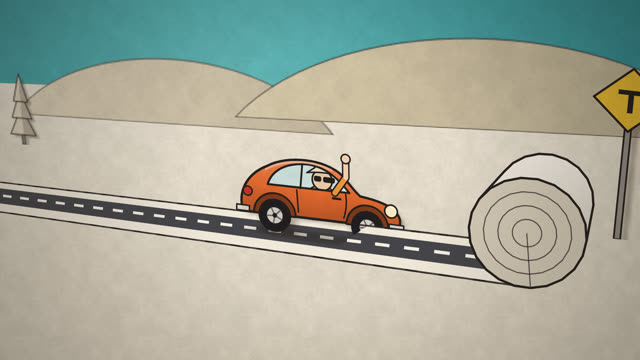
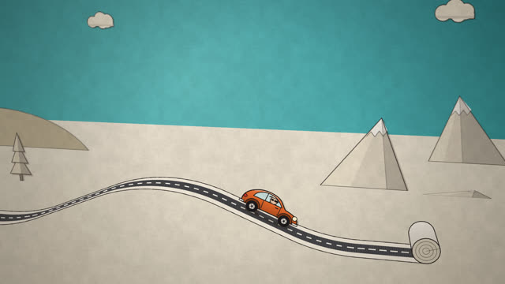
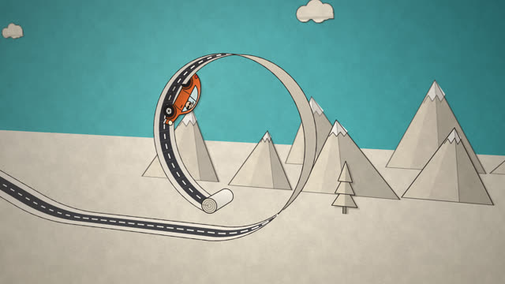
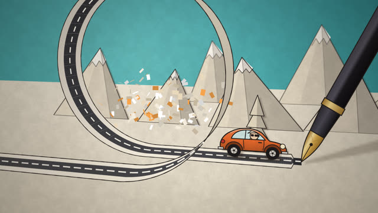
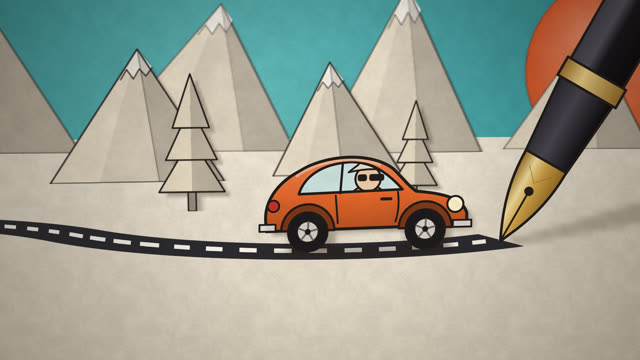
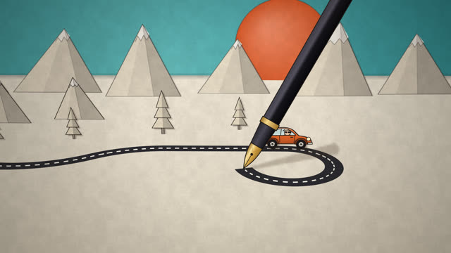
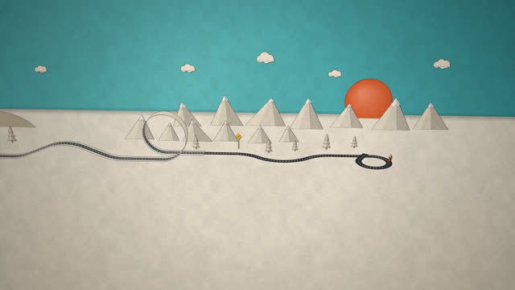
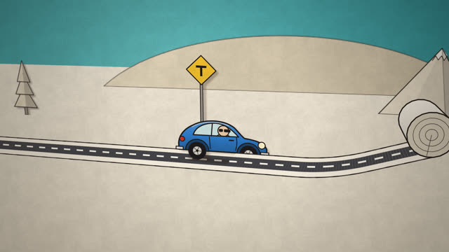

작업 흐름
- 입력
- 이야기의 박자(길의 끝, 길이 만들어짐, 고리 같은 볼거리, 펜으로 넘어감, 전체를 보는 마무리), 참고 영상이나 프롬프트
- 장면
- 거북이 그래픽처럼 쌓은 3D 길(직진 · 오르내림 · 고리 · 바닥 위 곡선), 자동차 위치와 길 끝을 정하는 두 트랙, 접혀 올라오는 종이 카드, 따라가는 카메라
- 확인
- 단계별 스틸과 구간별 콘택트 시트, 같은 시각 같은 픽셀 · 한 포즈 두 프레임 동일 · 장면 규칙(자동차가 길 끝을 넘지 않음)을 모든 프레임에서 보는 검사
- 출력
- 두 프레임씩 멈추는 24fps 1920×1080 MP4, 사운드트랙 선택, 브라우저에서 도는 장면 페이지
cd paper-road/examples/draw-a-road
node ../../scripts/render.mjs index.html --sheet 12
node ../../scripts/check.mjs index.html
node ../../scripts/render.mjs index.html
node ../../scripts/new-scene.mjs ../../../my-trip요구 사항: Node + Playwright Chromium, ffmpeg. GPU와 네트워크가 필요 없고, 30초 영상을 CPU로 2분 안팎에 렌더합니다. 단계별 순서는 SKILL.md에 있습니다.
샘플
예제 「Draw a Road」의 박자마다 한 장면과 시작 템플릿입니다. 카드를 누르면 새 탭에서 그 장면이 그 순간에 멈춘 채 열리고, 브라우저가 직접 그립니다.
Draw a Road 16:9 · 30초
길이 끝난 곳에서 종이 두루마리가 길을 펼치고, 종이가 다 떨어지면 만년필이 이어서 그립니다.

길의 끝 · 4.4초길이 끝나면
찢긴 길 끝에 멈춘 자동차. 위에서 떨어져 튕기는 두루마리, 손 흔드는 운전자

종이 길 · 8.1초두루마리가 펼치는 길
남은 길이만큼 작아지는 두루마리. 위로 굽고 아래로 굽는 리본, 다가가면 접혀 서는 산

볼거리 · 11.4초한 바퀴 고리
옆으로 비껴 서로 닿지 않는 고리. 보이는 면에 따라 앞면은 크림색, 뒷면은 크라프트색

넘겨받기 · 12.9초종이에서 잉크로
마지막 두루마리가 풀리는 동안 내려온 펜이 같은 자리에서 잉크 길을 이어감. 고리 출구의 종이 조각

잉크 길 · 17초펜촉 바로 뒤
장난감보다 큰 만년필. 초점 거리에서 먼 산은 흐리게, 펜의 짧은 그림자

잉크 길 · 26초말려 들어가는 길
바닥 위에서 300° 도는 곡선. 자동차는 옆모습을 지키며 방향만 바꿈

마무리 · 29.6초지나온 길 전체
카메라가 크게 물러나 한 번에 보는 여정. 펜이 길을 다 그리고 올라감

템플릿 · 12초시작 장면templates/scene.html
new-scene.mjs가 복사하는 출발점. 종이 길, 두루마리, 낮은 언덕, 펜으로 넘어가기실제 작품
이 레포에서 만든 스킬입니다. X에 공유된 AI 페이퍼 크래프트 영상("길이 끝나면 새로 그리면 된다")에서 생각만 빌려 예제 「Draw a Road」를 만들었고, 자동차와 운전자, 장면 구성, 타이밍, 소품은 모두 이 레포의 코드입니다.
링크
- SKILL.md 워크플로
- 폴더 lib · scripts · templates · references · examples
- README.md 빠른 시작
- references/LOOK.md 종이 질감, 팔레트, 참고 영상 읽기, 카메라 박자
- references/KIT.md 엔진과 소품 API, 새 소품 만들기
- references/LESSONS.md 겪은 문제와 해결